הציבו מבני אלמוגים חדשים שיגדלו במשתלה עד שיהיו
חזקים מספיק להעברה לשונית.
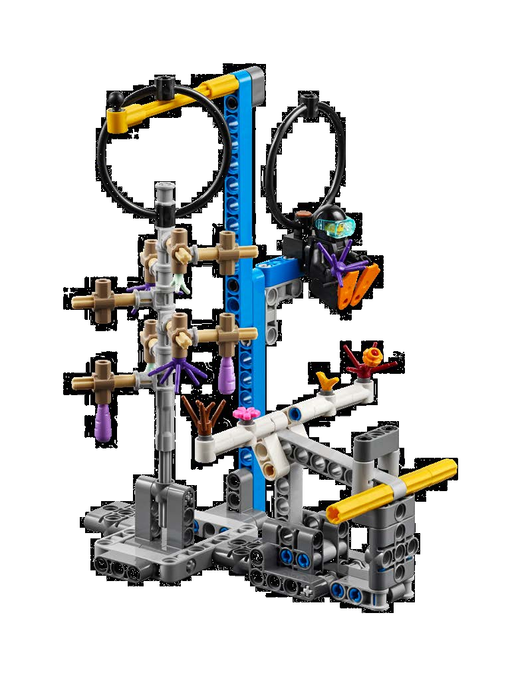
כריש
הכריש סומן זה עתה למטרות מחקר - שחררו אותו בחזרה
לבית הגידול שלו.
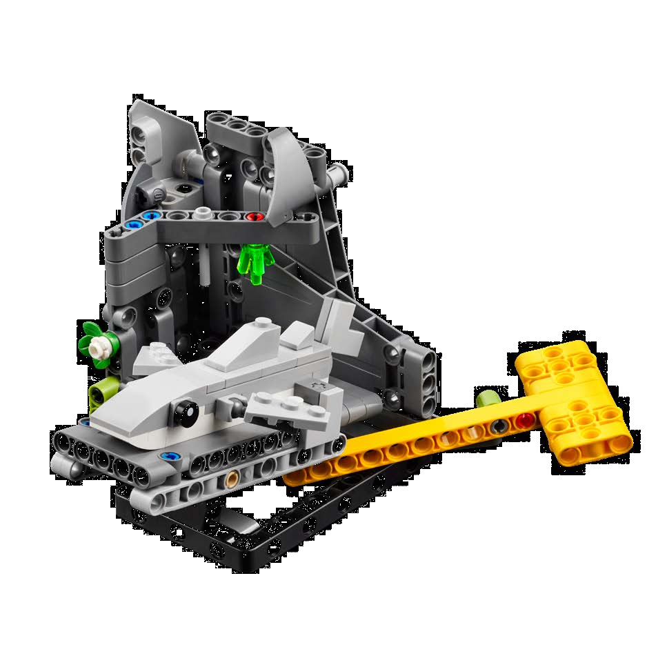
שונית אלמוגים
הציבו בזהירות את מבנה האלמוגים החדש מבלי לפגוע בקטעי
שונית סמוכים אחרים.
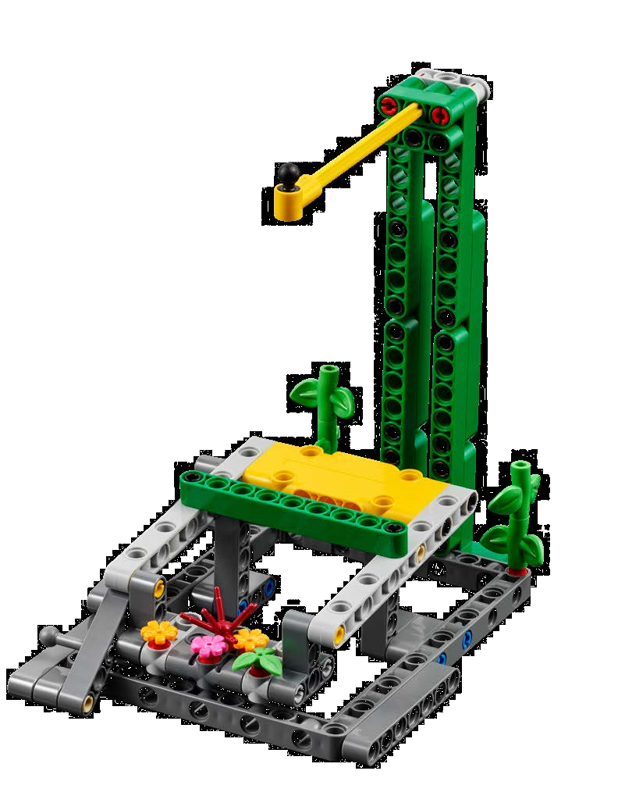
צוללן
עזרו לצוללן להעביר אלמוג חדש ממשתלת האלמוגים לשונית
האלמוגים.
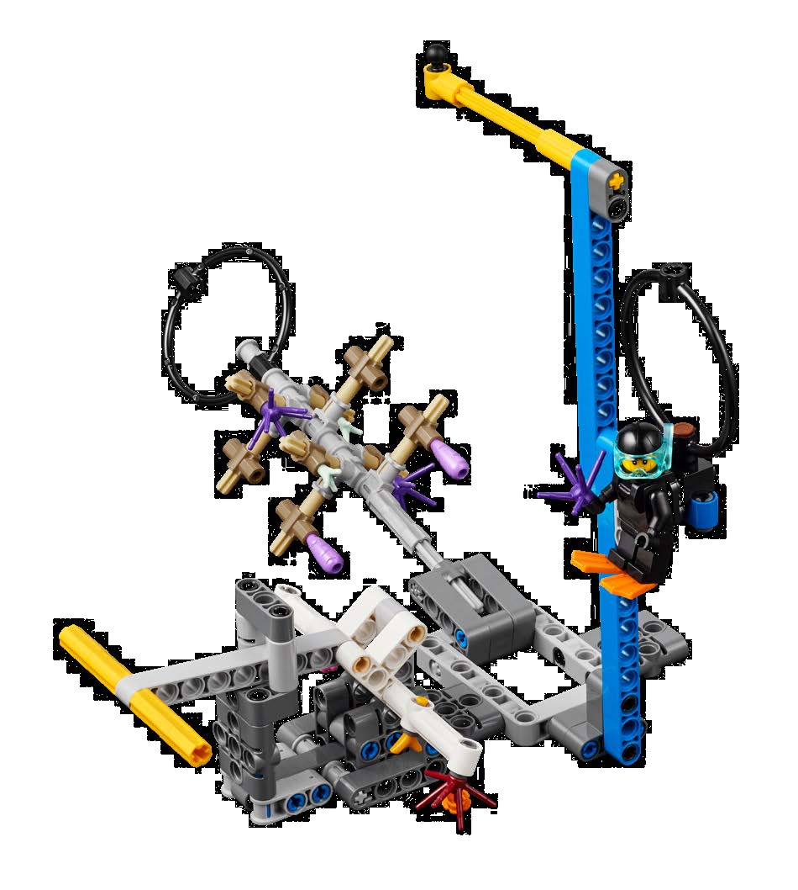
דג חכה
הובילו את דג החכה חזרה לבית המפתיע שלו בתוך הספינה
הטרופה.
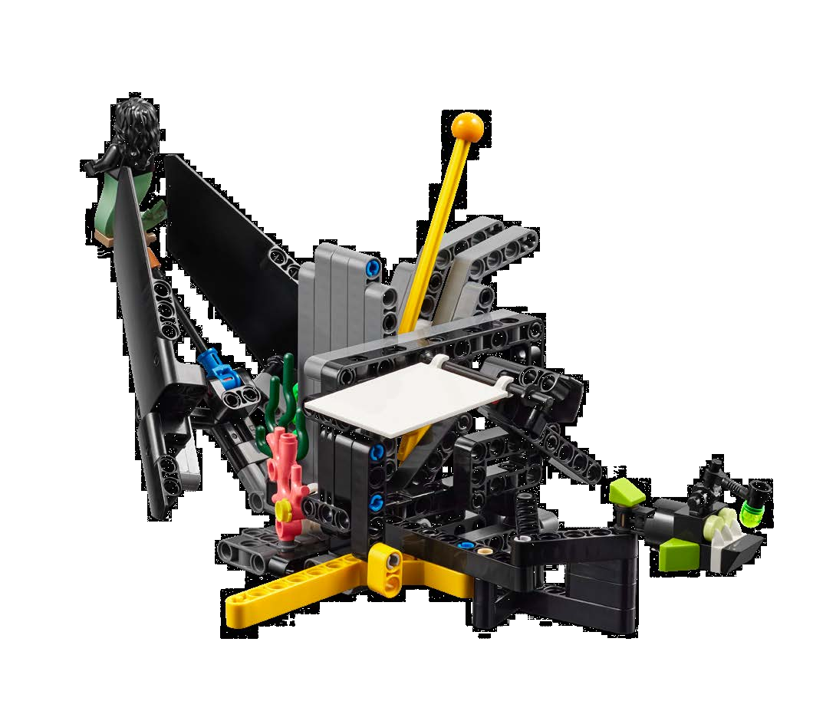
הרימו תורן
הרימו את התורן כדי לשקם את הספינה הטרופה שטבעה
ולחקור את מה שנמצא בתוכה.
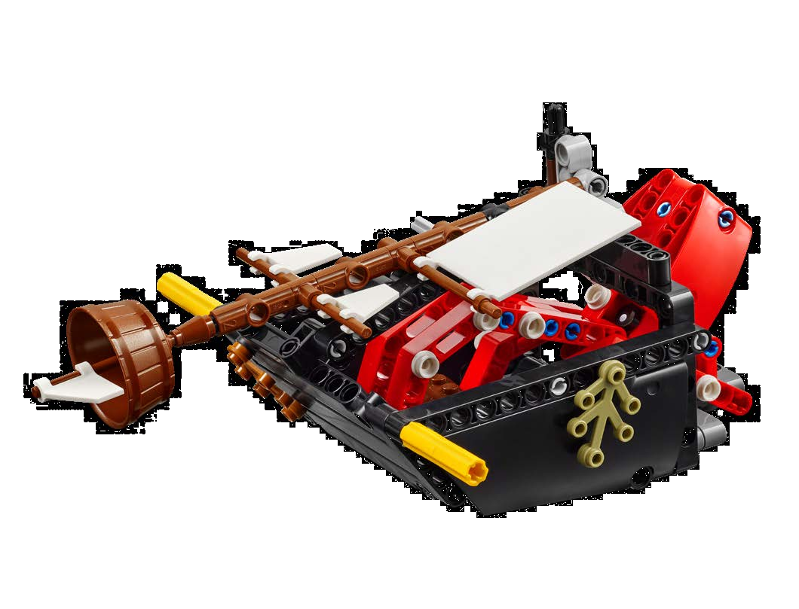
אוצרו של הקראקן
חלצו את תיבת האוצר מתוך הספינה הטרופה כדי לחשוף את
ההיסטוריה שלה ואת האוצר הטמון בתוכה.
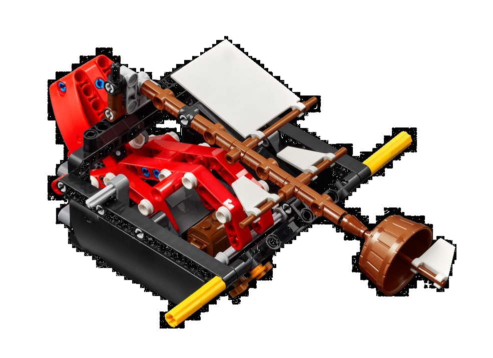
בית גידול מלאכותי
סדרו מחדש את מקטעי בית הגידול המלאכותי כדי ליצור
בתים בטוחים עבור הסרטנים ועבור יצורים ימיים אחרים
החיים באזור.
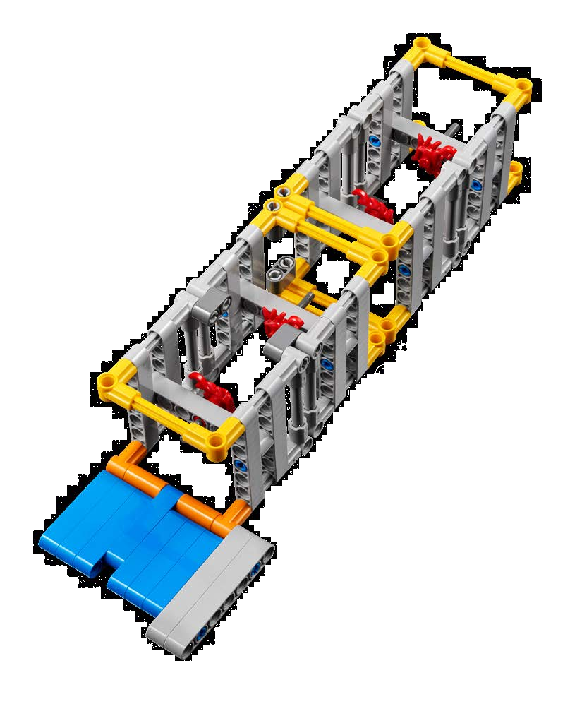
מפגש בלתי צפוי
יצור בלתי מזוהה נצמד לרכב האוטונומי התת־ימי! שחררו אותו
בזהירות והביאו אותו לנביעת המעמקים.
העבירו את הצוללת
יש אזורים מסוימים בים שקשה להגיע אליהם עם ספינות
גדולות. שלחו את הצוללת לחקור את הים של הזירה השנייה.
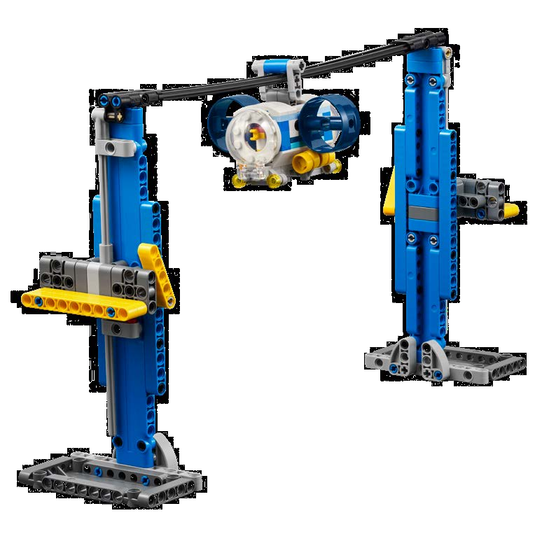
תגלית סונאר
השתמשו בטכנולוגיית הסונאר של הספינה כדי לסרוק את
הסביבה ולאתר עצמים או בעלי חיים סמוכים.
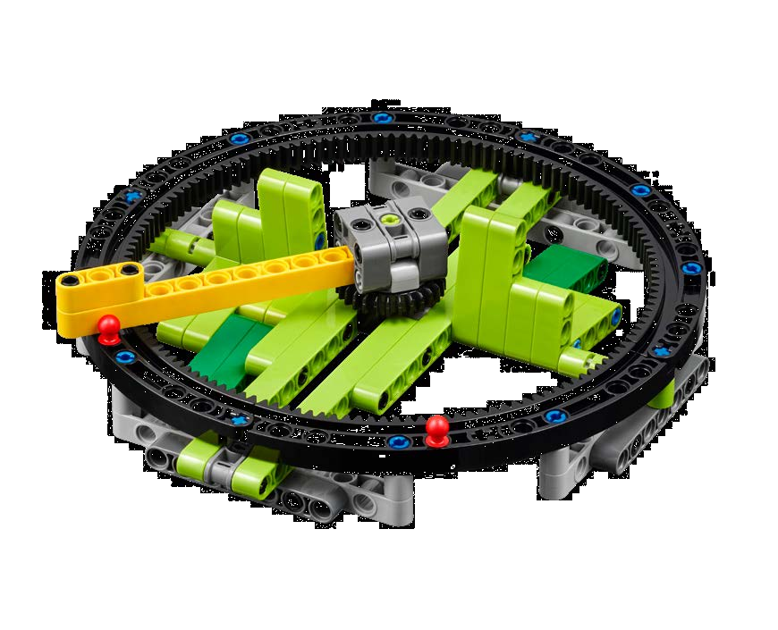
האכילו את הלוויתן
חסילוני קריל הם המאכל האהוב על הלוויתן! אספו את
חסילוני הקריל והאכילו בהם את הלוויתן הרעב.
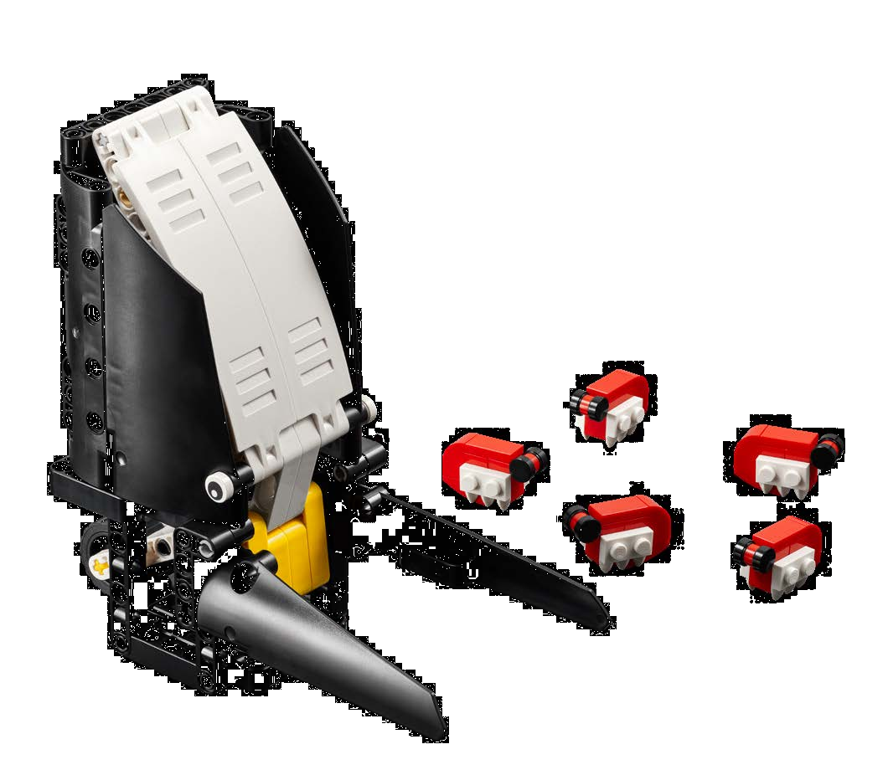
החליפו את נתיבי השיט
התאימו את מסלול ספינת המשא כדי להתרחק ממסלולי
נדידת הלוויתנים על ידי מעבר לנתיב שיט אחר.
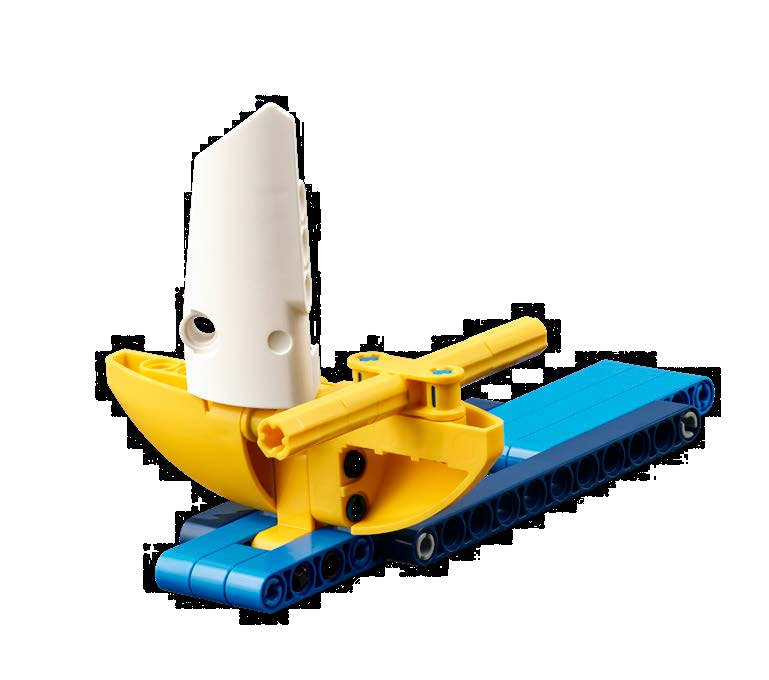
איסוף דגימות
אספו דגימות וחפצים מרחבי שטיח המשחק על מנת שמדענים
יוכלו לנתח אותם במעבדה.
ספינת מחקר
עגנו לנמל, באופן מאובטח, את הספינה המכילה את הדגימות
והחפצים שקבוצתכם אספה.
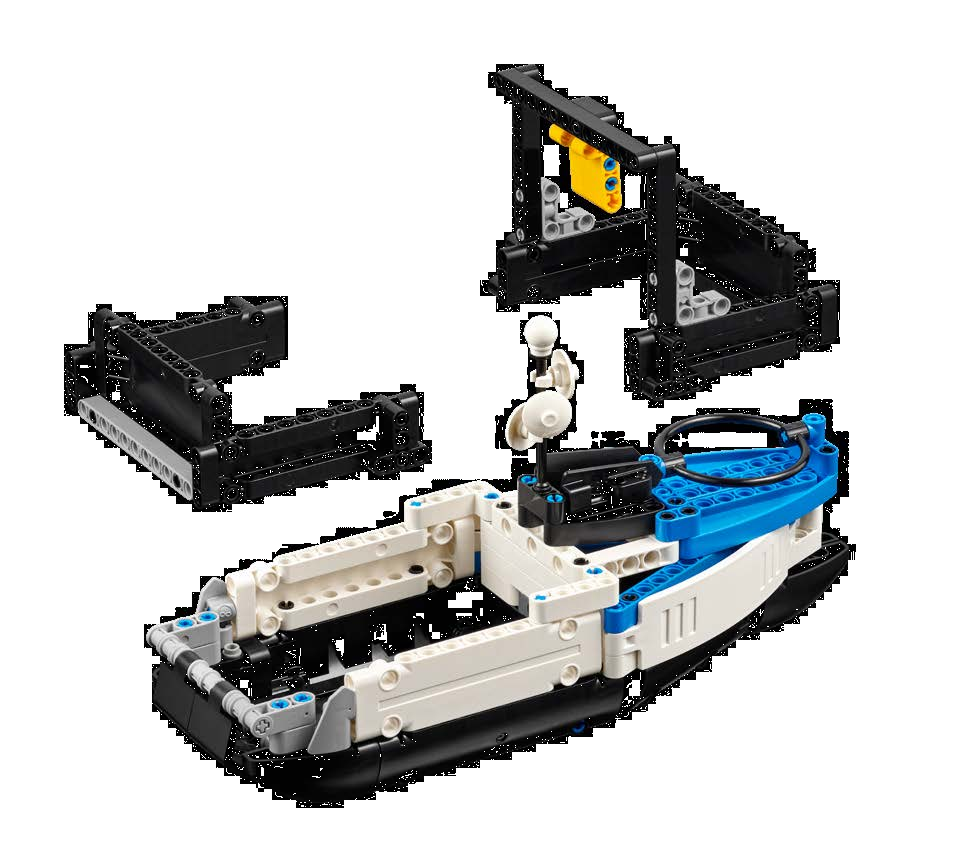
אסימוני דיוק
אתם מתחילים את המשחק
עם שישה אסימוני דיוק
השווים 50 נקודות. אם
אתם מפריעים לרובוט
מחוץ לבית, שופט/ת הזירה
מסיר/ה את אחד האסימונים.
אתם זוכים בנקודות עבור
מספר האסימונים הנותרים
בסוף המקצה.